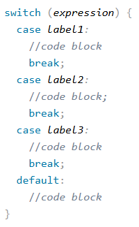

if : Bir koşul doğruysa kapsamındaki kodları çalıştırır.
else : Bir koşul yanlışsa kapsamındaki kodları çalıştırır.
elseif : İkiden fazla koşul varsa kullanılır.
<?php
$t = 10;
if ($t > 0) {
echo "Number is positive";
} elseif ($t = 0) {
echo "Number is zero";
} else {
echo "Number is negative";
}
?>
Switch Bloğu
switch : Bir değişkenin değerine göre farklı kod blokları çalıştırmak için kullanılan kontrol yapısıdır. Birden fazla koşulu daha düzenli şekilde yazmamızı sağlar.
case : switch yapısının içinde kontrol edilen değerin hangi duruma eşit olduğunu belirleyen ifadelerdir. Değer eşleşirse o bloğun içindeki kodlar çalışır.
break : case bloğunun çalıştıktan sonra switch yapısından çıkmasını sağlar. Kullanılmazsa alttaki case’ler de çalışmaya devam eder (fall-through).
default : Hiçbir case ifadesi eşleşmezse çalışan varsayılan bloktur. switch yapısının else karşılığıdır.

<?php
$gun = "Salı";
switch ($gun) {
case "Pazartesi":
echo "Hafta başladı!";
break;
case "Salı":
echo "Bugün Salı.";
break;
case "Çarşamba":
echo "Haftanın ortası.";
break;
default:
echo "Geçerli bir gün değil.";
}
?>
Ternary Operatörü
PHP’de ternary operatörü (üçlü operatör), kısa bir if–else yapısı yazmamızı sağlayan pratik bir karşılaştırma operatörüdür.